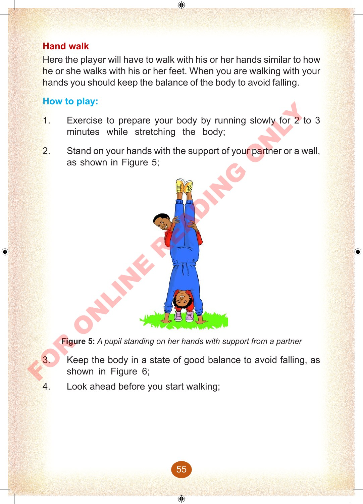
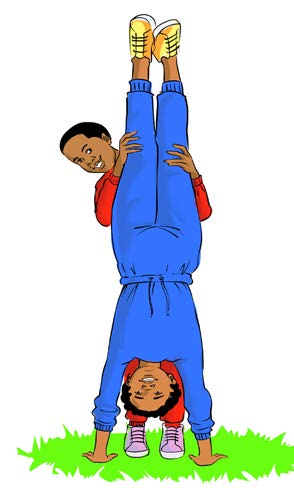

Hand walk
Here the player will have to walk with his or her hands similar to how he or she walks with his or her feet.
When you are walking with your hands you should keep the balance of the body to avoid falling.
How to play:
1.
Exercise to prepare your body by running slowly for 2 to 3 minutes while stretching the body;
2.
Stand on your hands with the support of your partner or a wall, as shown in Figure 5;

Figure 5: A pupil standing on her hands with support from a partner
3.
Keep the body in a state of good balance to avoid falling, as shown in Figure 6;
4.
Look ahead before you start walking;